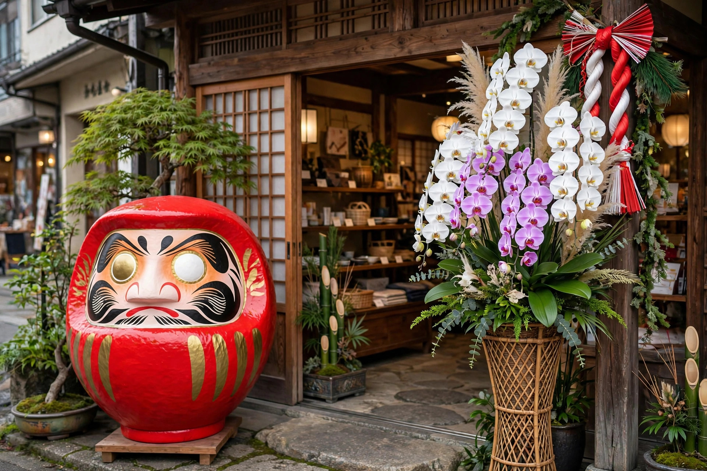

開店祝い・周年祝いにだるまを贈るマナー ― サイズ・色・のしの基本

この記事の結論
開店祝い・周年祝いにだるまを贈るときの基本は、①サイズは個人店なら4〜5号、広い店舗や法人なら6〜8号を目安に、②色は赤（定番）・金（金運）・黒（商売繁盛）から選ぶ、③贈る時期は開店前日〜1週間以内、④目は白いまま贈り、店主本人に目入れをしてもらう、の4点です。のし紙には「祝 開店」などと書き、贈り主名を明記します。
なぜ開店祝いにだるまなのか
だるまは「七転び八起き」の象徴であり、商売の浮き沈みを乗り越える願いを込められる贈り物です。花と違い枯れることがなく、レジ横や店頭に長く飾ってもらえるため、お店の顔として残り続けます。周年祝いでも「次の一年も転んでも起き上がる」という物語が節目にふさわしく、定番の贈答品になっています。価格の目安はだるまの値段の相場の記事が参考になります。
サイズの目安 ― 置き場所から逆算する
| 相手・店舗 | おすすめサイズ | 理由 |
|---|---|---|
| 個人経営の小規模店 | 4〜5号（約15〜18cm） | カウンターやレジ横に置きやすい |
| 中規模の店舗・事務所 | 6〜7号（約21〜24cm） | 入口や棚で存在感が出る |
| 大型店舗・法人の本社 | 8〜10号（約27〜30cm） | 受付や応接のシンボルになる |
| 周年祝い（法人） | 5〜8号 | 名入れと合わせて式典映えする |
大きければ良いわけではなく、相手の置き場所を圧迫しないことがマナーです。親しい間柄であれば、事前に飾る場所をさりげなく聞いておくと失敗がありません。
色の選び方
- 赤：開運・魔除けの定番。迷ったらこれ
- 金：金運上昇。景気づけや高級感のある店舗に
- 黒：商売繁盛・厄除け。落ち着いた雰囲気の店舗に合う
- 店舗カラーに合わせる：ロゴや内装の色に寄せると「考えて選んだ」印象に
色ごとの意味はだるまの色の意味と選び方で詳しく紹介しています。
贈る時期とのしの書き方
開店祝いは、開店前日から1週間以内に届けるのが目安です。開店当日は先方が最も忙しい日なので、前日までに届ける配慮が喜ばれます。周年祝いは記念日の前後1週間が目安です。
のし紙は紅白・蝶結びの水引を選び、上段に「開店御祝」「祝 開店」「祝 ◯周年」、下段に贈り主の氏名（法人の場合は会社名）を書きます。法人同士の贈答では、会社名のみ、または会社名＋代表者名が一般的です。店名や周年数を名入れしたオリジナルダルマにする場合は、名入れだるまの発注の流れをご覧ください。
※目入れは店主ご本人の儀式です。白目のまま贈り、開店の日に願いを込めて目を入れていただくのが本来の形です。祝い花と違い生ものではないため、受け取りの時間指定は比較的柔軟に対応できます。
よくある質問
Q. 開店祝いのだるまはいつ贈るのがよいですか？
A. 開店前日から1週間以内が目安です。開店当日は先方が多忙なため、前日までに届けるか、落ち着く1週間前後に贈ると受け取りがスムーズです。
Q. 開店祝いにのしは必要ですか？
A. 正式な贈答では、紅白の蝶結びの水引ののし紙に「開店御祝」「祝 開店」と書き、下に贈り主の名前を入れるのが基本です。法人の場合は会社名を入れると丁寧です。
Q. 目を入れてから贈ったほうがよいですか？
A. 目入れは願いを込めるご本人のものです。店主ご自身に開店の節目で目を入れていただくのが本来の形ですので、白目のまま贈ってください。
Q. 開店祝いにふさわしくない色はありますか？
A. 基本的に失礼にあたる色はありません。赤・金・黒がよく選ばれ、店舗のイメージカラーに合わせる選び方も喜ばれます。
開店祝い・周年祝いのだるま手配はDARUMA WORKSへ
贈答仕様の梱包やのし対応、店名・周年数の名入れまで対応します。法人・OEMの事業紹介をご覧のうえ、お問い合わせフォームからご相談ください。